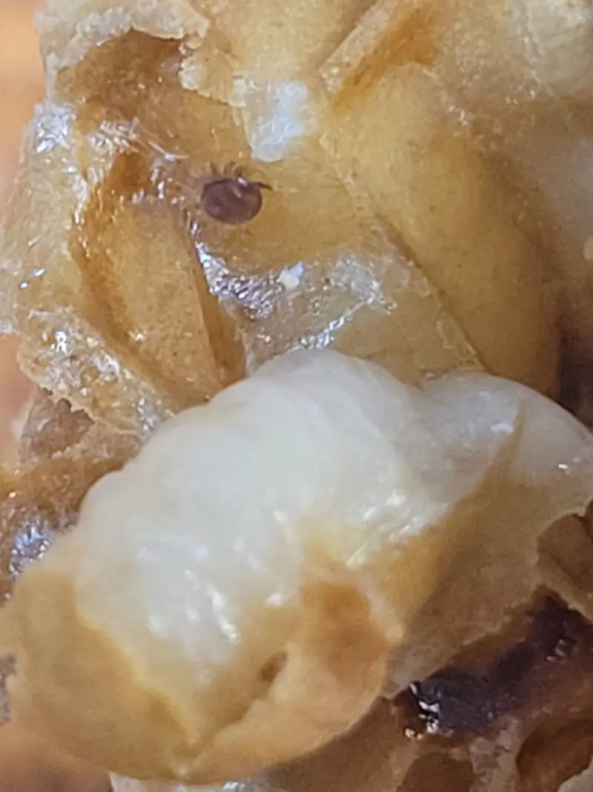

Varroa Chemical Treatments (UK) – Types, Timing & Safe Use
Last updated: 1 May 2026

Chemical treatments are a common part of varroa management in the UK. Used correctly, they can rapidly reduce mite pressure and help protect the bees that will carry a colony through winter. Used badly (wrong timing, wrong conditions, poor handling, or repeated use of the same treatment type) they can fail — and can increase the risk of resistance. Because varroa pressure overlaps with the wider bee diseases and pests picture, treatment choices should always sit inside a broader bee health plan. In practice, that usually means linking treatment choice to seasonal timing, safe handling with appropriate PPE, and clear medicine records.
What "Chemical Varroa Treatments" Means (Plain English)
Beekeepers often use "chemical treatment" as shorthand for any varroa control product applied to the colony to kill mites. That includes:
- Organic acids (often naturally occurring substances used in controlled, licensed products)
- Plant-derived treatments (often based on essential oil compounds such as thymol)
- Synthetic treatments (man-made active ingredients)
"Chemical" doesn't automatically mean "dangerous" — but it does mean you must take timing, handling and instructions seriously. That includes using the right PPE for varroa treatments, keeping proper veterinary medicine records, and fitting treatment into the wider seasonal calendar. If you want non-product / biotechnical methods, see Non-chemical varroa control.
Main Treatment Categories Used in the UK
Products and brand names change over time, but most licensed varroa treatments fall into a few predictable categories. The goal is to understand the category logic so you can make sensible decisions without chasing product hype.
1) Organic acid-based treatments
These are often used when they can reach the largest proportion of mites and conditions are suitable. In many beekeeping setups, this means being especially thoughtful about brood levels and time of year.
2) Thymol / plant-derived treatments
Often used after honey supers are removed, when temperatures are within the product's recommended range. These treatments can be popular as part of a late-summer varroa treatment timing and early autumn plan designed to protect winter bees, with September follow-up checks helping confirm whether the treatment window was effective. This is also the point where safe handling, PPE and accurate record-keeping matter most.
3) Synthetic treatments
Synthetic treatments can be effective, but resistance risk and local guidance matter. Repeating the same treatment type year after year (or under-dosing) can select for resistant mites and reduce long-term effectiveness.
| Category | Typical strengths | Typical constraints | What to do first |
|---|---|---|---|
| Organic acids | Often powerful when used correctly | Method-sensitive; safety and conditions matter | Check label + plan timing around brood/season |
| Thymol / plant-derived | Useful in post-harvest windows for many UK keepers | Temperature range can be critical | Check temperature guidance + remove supers if required |
| Synthetic | Can be effective where guidance supports use | Resistance risk if repeated or misused | Think rotation + avoid under-dosing |
Seasonal Timing and Temperature Considerations
In the UK, a lot of varroa planning revolves around seasonal windows and conditions (especially temperature and brood status). The best treatment in the world can fail if used at the wrong time. This is why the treatment calendar, late-summer varroa treatment timing and September follow-up checks are so important.
| Season | What's happening in the colony | Why timing matters | Common approach |
|---|---|---|---|
| Spring | Rapid brood expansion | Mites reproduce quickly inside capped brood | Monitor and plan; use IPM methods where suitable |
| Summer (honey flow) | Supers on; peak foraging | Treatment choices may be constrained by honey handling | Monitor; avoid disrupting crop with unsuitable products |
| Late summer / early autumn | Winter bees being raised | This is a critical window to protect winter bees from viruses | Often a main treatment period after supers removed |
| Mid-winter | Little or no brood (often) | More mites are on adult bees and easier to reach | Some keepers use a suitable winter approach (label first) |
If you want a month-by-month framework that sits alongside this, see Year in the Apiary, especially August and September, and the printable planners on the Downloads page.
Resistance and Rotation (Why Variety Matters)
Resistance develops when mites survive a treatment and pass on traits that make them harder to kill next time. This is more likely when:
- The same treatment type is used repeatedly without change
- Products are under-dosed or removed too early
- Treatments are used when conditions are unsuitable
- Colonies are treated without monitoring and follow-up checks
Safe Handling, PPE and Preparation
Safe use protects you, your bees, and anyone nearby. Even if a product is widely used, you should treat it like a controlled substance: read the instructions, prepare properly, and clean up properly.
- PPE guidance: read PPE for varroa treatments (and grab the printable checklist on Downloads).
- Apiary setup: reduce drifting/robbing risk with good management — Hive Management helps here.
- Hygiene: clean tools and avoid spreading problems around the apiary — Hygiene.
Record Keeping (What to Write Down and Why)
Many varroa controls are classed as veterinary medicines. Keeping clear records is good practice and may be a legal requirement depending on the product used. Records also protect you by showing what was done, when, and why — especially when comparing late-summer varroa treatment timing with September follow-up checks.
If you are building your own system (or using tools like HiveTag), consistent records make it easier to see patterns: which colonies cope better, which treatments worked best in your conditions, and whether timing needs improving next year.
Free PDF Download
- Download: Varroa Chemical Treatments – UK Seasonal Overview (PDF)
- Pair it with PPE for varroa treatments if you want the safety checklist beside it
- See all templates and planners: Free Downloads
Reminder: this supports good practice but does not replace labels or current UK guidance.
Frequently Asked Questions – Chemical Varroa Treatments
Approved treatments are designed to be used safely when applied exactly as instructed. Risk increases when products are used outside the recommended conditions, the wrong dose is used, or timing is poor.
This depends on the specific product and its label instructions. Treat the label as the final authority and plan your year to avoid rushed decisions during the honey flow.
Start with monitoring and a seasonal plan. Consider your conditions, the brood situation, temperature ranges, and resistance awareness. The hub page Varroa Management ties these decisions together, while the treatment calendar helps you place decisions into the right seasonal window. Before treatment day, also check your PPE and make sure your record sheet is ready.
Often yes — IPM is about combining methods so you are not relying on one product forever. See Non-chemical varroa control.
Yes — it's good practice and may be required depending on the treatment. See Veterinary Medicine Records. This becomes especially useful when reviewing August treatments and September follow-up checks.
Related pages
- Varroa Management (UK) – the wider hub for monitoring, thresholds and IPM
- Treatment Calendar – place each treatment option into the correct seasonal window
- August – the main late-summer treatment period for many UK beekeepers
- September follow-up checks – review outcomes and confirm winter bee protection
- Non-chemical Varroa Control – biotechnical options and wider IPM methods
- PPE for varroa treatments – safe handling, clothing and shed-side checklist
- Veterinary Medicine Records – what to record after treatment and why it matters
- Bee diseases and pests overview – place varroa decisions into the broader colony-health picture
- Downloads – printable PDFs, planners and varroa reference sheets